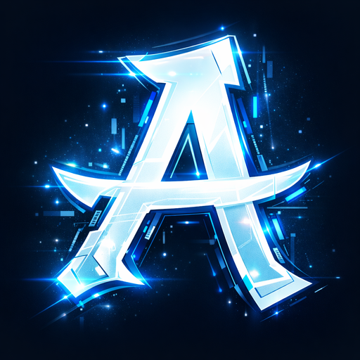

ÉTAT DU SERVEUR
Connexion…
Vérification du ping Minecraft
◈
ARAGONITE DiscordChoisis ta classe, gagne de l’expérience et de l’or, puis pars explorer Valoria et les donjons de Dwarf City.
Les compteurs se mettent à jour toutes les 60 secondes.
Copie l’adresse du serveur et commence ta progression RPG.
Guerrier, mage, archer, assassin ou paladin : trouve ton style de combat.
Gagne de l’XP et de l’or, complète des quêtes et améliore ton personnage.
Découvre les sites cachés de Dwarf City et pars en donjon, seul ou en groupe.
Classes, progression et exploration : tes premières clés pour l’aventure RPG.
Rejoins Aragonite avec play.aragonite.fr, puis prends la boussole du lobby et sélectionne RPG – Karak Dûrn. Ton profil accompagne ton aventure : il conserve ta classe, ton niveau, ton XP, ton or et tes quêtes.
Ton guide en jeu
Ouvre le menu RPG ou utilise /rpgcore:rpg tutoriel pour découvrir les commandes et les étapes de départ.
Choisis une classe qui correspond à ta façon de jouer. Chaque profil possède ses caractéristiques et ses compétences.
Commandes : /rpgcore:rpg classe, /rpgcore:rpg stats et /rpgcore:rpg hud on.
À Valoria, rencontre Maëlle et aide-la à sécuriser le chemin du nord. Les quêtes font progresser ton personnage et peuvent te rapporter de l’XP et de l’or. Consulte ton objectif avec /rpgcore:rpg quest.
Équipe-toi
La boutique RPG permet d’acheter et d’équiper des armes selon ton niveau. Vérifie les prérequis et ton solde avec les commandes du menu RPG.
Ouvre l’œil dans les biomes : des lieux dissimulés peuvent révéler des reliques ou l’entrée d’un donjon. Pars en expédition seul ou forme un groupe jusqu’à cinq joueurs pour affronter des vagues et leurs boss.
Pour les annonces, la compatibilité et l’aide, retrouve la communauté sur Discord.
Consulter les annonces sur DiscordChaque vote aide de nouveaux joueurs à découvrir Aragonite.
Entre ton pseudo Minecraft, vote sur la fiche Aragonite, puis vérifie ton vote ici pour débloquer la roue. Un vote validé donne droit à un lancer.
Ouvrir la page de voteUtilise le pseudo Minecraft qui recevra le lot RPG.
Valide le captcha sur la page Serveur-Privé d’Aragonite.
Après vérification, récupère ta récompense en jeu avec /vote.